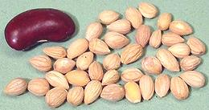
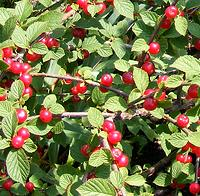
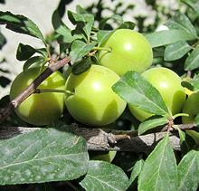
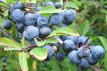

SAFARI
Users
General & History
The largest number of Prunus species, and pretty much all that are produced commercially, are of Asian origin, though some are native as far west as Europe. Many were intensely cultivated in Anatolia, Caucasus and Western Asia in prehistoric times. They are pretty much all temperate climate plants. because they need winter chill in order to fruit.
There are a number of species native to North America, and some have been important to American Indians, and some are eaten locally, but only the Beach Plum (Prunus maritima) is exploited commercially, and on a very small scale.
Varieties
Listed here are the species and varieties that are most significant as food. A fair number of species not listed here are eaten or made into jams and jellies on a local basis, but are not available in our markets here in Southern California.
Almonds
Almonds[Prunus dulcis var dulcis (sweet almond) | Prunus dulcis var amara (bitter almond)] Sold as "nuts", almonds are the pit of a peach-like fruit, but one with a thin, leathery flesh. California is by far the world's leading grower and exporter of almonds, with Spain a very, very distant second, trailed by Iran. Due to what many think is an over-reaction by the FDA to a single US incident, all US almond nuts sold to consumers are pasteurized against salmonella. Those sold as "raw" are either lightly steam pasteurized or fumigated with propylene oxide. This is the sort of thing that drives raw foods adherents nuts - but almond farmers are allowed to sell unpasteurized nuts directly to consumers. Shelled almonds are about 30 to the ounce. Bitter almonds are not
allowed by the FDA due to their much higher cyanide content than in
sweet almonds. If you need stronger almonds, use nectarine or apricot
pits - but use caution, they also contain more cyanide than sweet
almonds.
Almonds[Prunus dulcis] Immature "green" almonds are favored in Persia (Iran), Armenia and the Near East as a snack food. The whole fruit is eaten. It is quite sour, but tempered by dipping it in sea salt. Due to our very large populations from these regions, and since California is the world's leading almond grower, these are plentiful when in season (late April to mid June - 8 weeks at most). Bins of them will be presented in the big ethnic markets here in Los Angeles. Some are exported to other parts of North America where there are significant communities of the appropriate eths. They should be enjoyed right after purchase, as the outer portion becomes tough in a couple of days. These weighed 0.33 ounces each on average. Green almonds are now also favored (the seed inside only) by some
high priced chefs for use in expensive gourmet dishes.
|
Apricots
Apricot[zard-alu (Persia); Prunus armeniaca] In ancient times Armenia was famous for apricots, but some hold their first domestication to be farther east. In any case, this fruit is still very important in Anatolia, Caucasus and Persia, with Turkey the leading producer, followed (at some distance) by Iran and Uzbekistan. California grows 95% of the apricots produced in North America,
and the variety most planted in Turkey was developed in California.
Fresh apricots are widely available here in California when in
season, but not so much elsewhere as they are quite perishable. The
photo shows whole, cut and dried apricots. The dried ones have
been treated with sulphur dioxide for color - "natural" dried
apricots are a very dark brownish color.
Bitter Apricots[Prunus armeniaca]
These are sold for uses similar to those of green almonds (see above).
They have a pleasant sourness and the immature shell has a little
crunch to it. The seed is fairly bitter with a definite hint of
cyanide. They were about 1 inch long, purchased from a large
multi-ethnic market in Los Angeles (Sunland).
Black Apricot[Prunus hybrid]
This is not actually an apricot - it's a cross between an apricot
and a plum. As you can see, the fruit is not nearly as dry as an
apricot and the seed is not loose inside. This fruit may also be
called a plumcot, apriplum, pluot or aprium.
|
Cherries
Sweet Cherries[Prunus avium] Cherries are native to North America, Europe and Western Asia. They grow in regions where there will be a good winter chill, so they do not fruit in the tropics. Turkey is the largest producer (19%), with the United States close behind and Iran trailing, and total European production accounting for 40%. A number of cultivars are used to produce sweet cherries, which are
the cherries common in our markets when in season - and frozen out
of season. They fall into two general categories: "white" and "red",
as shown in the photo. In June they have been selling for as low as
2019 US $0.89 / pound in the multi-ethnic markets here in Los Angeles.
Sour Cherries[Prunus cerasus var Amarelle]
This cherry is used mainly for cooking, mostly in pies and pasteries.
It is currently of limited availability here in Los Angeles - and at
a rather high price, but for many uses there is no substitute. They
are a bit smaller and more uniformly spherical than the common sweet
cherries. Most common in North America is the Montmorency variety,
grown in Canada, France and the U.S. States of Michigan and Wisconsin.
Morello Cherries [Prunus cerasus var Morello]
[Prunus cerasus var Morello]
This is a small European sour cherry, of darker color than the
Amarelle variety common in North America. They are available
here mainly as "compote" or preserves, usually sold at a premium price.
The photo specimens were from Bulgaria, in size up to 0.75 inch.
Ingredients: Morello cherries with pits, water, sugar. One of my
favorite markets had piles of 24 ounce jars, both pit in and pitted
at 2013 US $1.49 per jar. Naturally, at that price, I bought plenty.
Mahaleb [Bird Cherry: Mahlab, Mahleb (Mid East, Anatolia, Armenia); Mahlepi (Greek); St Lucie Cherry, Mahaleb Cherry; Prunus mahaleb] This cherry tree is native from central and southern Europe east to Pakistan and Kyrgystan, and south to Morocco and Lebanon. It produces small red cherries that are thin fleshed and bitter, eaten mainly by birds. The cherry pits are broken open to release the kernel, which is used as a spice for holiday sweets and cakes, particularly in Greece, Turkey, Armenia, Cyprus, Lebanon. Syria and Iraq. It is also used to flavor Nabulsi cheese. It is described as tasting like a combination of cherry and bitter
almond. Myself I don't detect much cherry, but it has a moderately
bitter aromatic resin taste. The specimen photo shows seed kernels
0.2 inch (5 mm) long purchased from a market in Los Angeles. It
is more available in powdered form, but that must be fresh as it
degrades rapidly.
Details and Cooking.
Cherries - Subgenus PadusUsually called "Bird Cherries", these trees grow in Europe, Asia and North America.
Hollyleaf Cherry[Evergreen cherry, Islay; Prunus ilicifolia]
Native to the coastal chaparral of California, from Monterey south
into northern Baja, this shrub or small tree, growing to 30 feet,
has been cultivated for hundreds of years for its fruit. The purple
to black fruit, up to almost an inch in diameter, is sweet, with
moderately thick flesh around a single pit. The fruit can be eaten
out of hand, but the Coastal Indians liked to ferment it into an
intoxicating beverage. This is a popular and decorative landscaping
plant in coastal California.
Photo by Noah Elhardt distributed under license Creative
Commons
Attribution Share-Alike v2.5 Generic.
Nanking Cherry [Korean cherry, Manchu cherry, Downy cherry, Shanghai cherry, Ando cherry, Mountain cherry, Chinese bush cherry, Chinese dwarf cherry, Hansen's bush cherry; Prunus tomentosa]
Native to northern and western China, Tibet, Korea and Mongolia, this
shrub, growing to 10 feet, produces red cherries between 1/4 and 1/2
inch diameter. The fruit is sweet and slightly tart, used for juice,
jams and wine. It is also used in pickled vegetables and mushrooms.
Some are grown in England and the United States. It is often used
as a dwarfing root stock for grafting other cherries, and as a
flowering decorative.
Photo by WildBoar contributed to the Public Domain
.
Oshima Cherry [Prunus speciosa]
[Prunus speciosa]
Native to Japan, this tree is now planted as a flowering decorative
worldwide (the photo is from Paris, France). It can grow to 39 feet
high and bears small black edible cherries about 0.4 inch diameter.
The dried flowers are used to make tea. The leaves (sakura leaf)
are used in cooking and medicinally in Japan.
Photo by Moonik distributed under license Creative
Commons
Attribution-ShareAlike 3.0 Unported.
Ground Cherry[European Dwarf cherry, Dwarf cherry, Mongolian cherry, Steppe cherry, European ground cherry; Prunus fruticosa]
This plant is native to Central Europe, from Germany into Italy,
Eastern Europe, Siberia, the Caucasus, Kazakhstan and Xinjiang in
Western China. It is a low shrub growing to a little more than 6 feet,
producing
dark red fruit between 0.3 and 1.0 inch diameter. The fruit is sweet
but tart, used for pies and pastry fillings, jams and
jellies. It also attracts bees and is important to honey production.
Photo by HermannSchachner contributed to the Public
Domain.
|
Peaches & Nectarines
Peaches and Nectarines are of the same species, Prunus persica, differing mainly in that peaches are fuzzy and nectarines are smooth skinned.
Peaches, Common[Prunus persica] Peaches originated in China, and have been in cultivation there for more than 4000 years. In ancient times they were taken to India and Western Asia. They were taken from Persia to Greece during the time of Alexander, and were grown extensively in Italy during the Roman Empire. Today China grows over 50% the world's production of peaches and nectarines, with Italy second at 7.7%. Many cultivars are grown, including "yellow" and "white" varieties. The flesh of white peaches vary from nearly white to light yellow, while regular peaches are intensely yellow. Some varieties are "freestone", with an easily removed seed, but others are "clingstone", with a seed very tightly bound to the flesh. Clingstones ripen early in the season and are the major versions for processing and canning. Freestones come later in the season and are the most common varieties in the markets. They tend to be larger, firmer and less juicy than clingstones, but are still quite sweet. They work well for canning and baking. The photo shows white peaches to the left and yellow peaches to
the right. Both were about 3.3 inches diameter and weighed about
9-3/4 ounces, near the high end for size and weight. The yellow are
significantly jucier, sweeter and have more intense peach flavor than
the white, but the white can be cut more neatly and are reported to be
higher in vitamins. Both specimens were obviously "freestone"
varieties.
Nectarines[Prunus persica] Nectarines are the same species as peaches and vary only in having smooth skins instead of fuzzy. As with peaches, China grows over 50% the world's production Like peaches, nectarines come in "yellow" and "white" varieties,
and "freestone" and "clingstone". The photo specimens are a "white"
variety.
Donut Peaches / Nectarines[Prunus persica]
Why something that's really just a curiosity is so common in my local
markets here in Los Angeles is a mystery to me. They are generally
considerably more expensive than regular peaches, have a lot less
flesh per unit, and, in my opinion, generally don't taste as good.
They come in yellow and white versions of both peaches and nectarines.
The photo specimen is a white peach variety.
Pickled Green Peaches[Prunus persica]
From Turkey, these were crunchy and mildly tart with just a hint of
sweetness. They were entirely edible, with skins very slightly fuzzy
and the flavor fairly neutral. 1-1/2 inches long, they weighed about
0.44 ounce each on average. Seftali Caglass Tursusu. Ingred: peaches,
water, salt, citric acid, acetic acid.
|
Plums / Prunes
[Prunus domestica | Prunus americana | other species] Listed here are the most common plums. There are a number of other edible wild plums that were valued by American Indians, but are no longer in much use.
Plums[Prunus domestica]
The photo shows three common versions, called white, purple and red.
Italian Prune Plums[Prunus domestica] These smaller plums have a more intense plum flavor than the larger
ones shown above. They are also drier of flesh and easier to dry
into prunes.
Giant Plums&Tiny Plums[PLU #4042 (giant); Prunus domestica] The very large plums in the photo were up to 3.2 inches long and weighed up to 10 ounces each. I don't have a variety name and have only seen them once, in September 2014. They were freestone, had good plum flavor and texture, and excellent flesh to seed ratio. The tiny plums I have no photo of, because I saw them only once
many years before I started this Web site in 2004. They were purple
plums that tasted fine, but had an unusual side effect which may have
caused them to disappear from the market. Under the influence of these
plums I let by far the longest and most luxurious fart of my entire
life! I went out on the back porch to enjoy this event in private,
but was reminded of a nearby open window with an assistant working
on the computer just inside - when I heard shrieks of laughter
coming from within.
Sugar Plums[Prunus domestica var sugar]
These are not the Sugar Plums of the Christmas story, which were
hard candies with a spice seed or nut in the center. These trees
were brought from Europe in colonial days and are still popular,
especially with homeowners who need a small self pollinating fruit
tree. The plums are "snack size" and quite sweet. They have a small,
rather flat seed. The photo specimens were typically 1.8 inches
long, 1.1 inches diameter and weighed around 3/4 ounce. They were
purchased from a large Asian market in Los Angeles (San Gabriel)
in July 2019.
Sour Plums[Prunus domestica]
These unripe plums are sold as "sour plums" here in Los Angeles,
when they are in season. They are not identical to the sour plums
of the Caucasus, which remain sour when mature, but they are very
popular here anyway. Several of the multi-ethnic markets here in
Los Angeles have piles of them in June. They weigh about 1/2 ounce
each and average about 1-1/4 inches diamtere. They make a good tart
snack just eaten out of hand. I have recently purchased them for
2019 US $1.99 / pound.
Cherry Plum [Myrobalan plum, Sour Plums; Tkemali (Georgian); Prunus cerasifera] This small tree, growing to 49 feet high, is native to Europe and Asia, but has escaped cultivation in North America and is now found in the wild. It is a widely planted decorative, and a number of cultivars have been developed with red or purple leaves. The edible fruit is between 3/4 to 1-1/8 inch diameter - the fruit in the photo is not yet ripe, so is quite green. Flower and fruit color varies with cultivar, with fruit ranging from green through red to very deep purple. Edibility also varies with cultivar, ranging from sweet and edible out of hand to rather tart, best for making jams and jellies. These small plums, in both red and green colors, are very important
in Georgia (former Soviet Republic of), much used for making tkemali
sauce, "ketchup of the Caucasus". Some sweeter plums may be mixed
in to make a less tart sauce. Examples found in Los Angeles ethnic
markets are commonly made in Russia. These plums are occasionally
available dried, seed in, made from a green variety, in ethnic markets
serving a Caucasus community. See "Prunes" below.
Photo by Diako1971 distributed under license Creative
Commons
Attribution-ShareAlike 3.0 Unported.
Cherry Plum - Dried[Myrobalan plum, Sour Plums; Prunus cerasifera] These are Cherry Plums as described above, but dried whole. They were probably between .75 and 1.13 inch diameter when picked, but dried are between 0.44 and 0.64 inch. Much of that size is taken up by a fairly large seed. The see at the lower right corner of the photo is from one of the larger ones. These are a snack item - you just toss one in you mouth and
scrape the flesh off the seed with your teeth. The taste is intense,
and quite a bit more sour than the regular prunes we have here in
North America. These were purchased from a large multi-ethnic market
in Los Angeles (Sunland) for 2019 US $4.99 / pound, in one pound
bags. Product of Tajikistan, where plums are becoming a major
cash crop.
Prunes & Dried Plums[Prunus domestica | Prunus cerasifer (sour plums)] Prunes are used in cooking throughout Europe, from the British Isles through the Caucasus, and in North America for recipes originating from that region. They need to be soaked for about an hour before using. Prunes are also used as a snack, and sometimes to aid in "regularity". In North America black prunes dominate, and they are almost always seeded. Dried sour plums are generally seed in. The photo shows fresh plums at the top, black prunes made from
similar plums in the middle, and dried sour plums along the bottom.
Those to the left (lighter color) are treated with sulphur dioxide,
and those to the right (darker color) are not.
Mume Plum [Chinese Plum, Japanese Apricot; meihua (China); Hiragana (Japan);
Prunus mume]
[Chinese Plum, Japanese Apricot; meihua (China); Hiragana (Japan);
Prunus mume]
This is more an apricot than a plum, but it's so commonly called a
plum we have entered it here. This is a very important fruit in
China, Korea and Japan, not often eaten fresh but made into many
different products, including plum sauce, plum wine and umeboshi
(Japanese pickled plums). The Umeboshi in the photo were about 1
inch long. These plum products have their own
Mume Plum page.
Japanese Plum / Chinese Plum[Blood Plum; Prunus salicina]
This plum, native to China, is now grown in Japan, Korea, Australia
and the United States. It has been extensively used as hybridization
stock to develop other important plum varieties. In China, candied
fruits are made flavored with salt, sugar and liquorice. In Japan,
half ripe fruit are used to flavor an alcoholic beverage called
sumomo shu. It is also used to make alcoholic beverages in
China. The fruits are between 1-1/2 and 2-3/4 inches diameter, and
can be eaten out of hand.
Photo by Erin Silversmith distributed under license
GNU Free Document License v1.2.
Mirabelle Plums[Prunus domestica subsp. syriaca]
Originating in Anatolia or Caucasus, this small oval plum is now a
specialty of France. Though these plums are fine eating, nearly all
are made into jam or used for eu-de-vie brandy. In Romania these
plums are popular for eating unripe when they are crisp and sour.
Greengage Plums[Reine Claudes (French); Prunus domestica subsp. italica var. claudiana]
In the late 1700s these small green plums were widely grown in the
American Colonies / States, but they are not common here now. They
are widely grown in Europe, typically for stewing into compote.
Photo distributed under license Creative Commons
Attribution-ShareAlike 3.0 Unported.
Beach Plums[Prunus maritima]
This shrub, up to 6 feet tall, is native to the east coast of the
United States from Maine to Maryland. The fruit is reasonably
sweet and can be eaten out of hand, but is only 5/8 to 3/4 inch
diameter. It is often made into jam or wine. It is produced
commercially on a small scale, with development of varieties with
larger fruit in progress.
Photo by Aznaturalist distributed under license Creative
Commons
Attribution-ShareAlike 3.0 Unported.
Damson Plum[Prunus domestica subsp. insititia]
These small oval plums are most grown in England. The skins are quite
sour, so the main use is for making jams and jellies. They are also
used to make damson gin, similar to sloe gin. There is a white version,
but it is now very rare.
Photo by Jonathan Billinger distributed under license
Creative Commons
Attribution-ShareAlike 2.0 Generic.
Bullace Plum[Prunus domestica subsp. insititia]
These small spherical plums are closely related to the Damson Plum,
but much smaller. They are most grown in England where both black
and white varieties are found. They are quite sour until fully
ripe, when they can be eaten fresh, but they are more used for making
jams and jellies. In the past they were fermented into wine and
used to make pies.
Photo by Eirian Evans distributed under license
Creative Commons
Attribution-ShareAlike 2.0 Generic.
Sloe Berries [Blackthorn; Prunus spinosa]
Not strictly a plum, but closely related, this berry is native to
Europe, Western Asia and a few locations in North Africa. Berries
are almost black and less than 1/2 inch in diameter. It's most famous
use is to be steeped in gin and sugar to make sloe gin, a deep red
liqueur. the berries can also be made into jams and jellies, and
if pickled in vinegar, are similar to Japanese umiboshi. In England
and Central Europe they are also fermented into wine.
Photo distributed under license Creative Commons
Attribution-ShareAlike 3.0 Unported.
Canadian Plum[Blackthorn; Prunus spinosa]
This small tree, growing to 33 feet, is native to a small area
surrounding the Great Lakes and St. Lawrence Seaway, and into Maine.
The fruit is 1 inch to 1.8 inches long, with a tough orange-red
skin and yellow flesh. The fruit is eaten raw or cooked and made into
preserves.
Painting by Harriet Keeler, 1900, copyright expired,
colorized by M. Effa 2008 distributed under license Creative Commons
Attribution-ShareAlike 3.0 Unported.
Mexican Plum[Prunus Mexicana]
While there are a few isolated populations in Mexico, this small tree,
growing to 38 feet, is most common from Missouri to eastern Texas
and east to Alabama, but not continuously. The fruit, dark red to
purple, is about 1 inch diameter and may range from sour to sweet.
It is said to make exceptionally good jelly, is eaten raw or cooked
and made into wine and brandy. The seed kernels and leaves are high
in cyanide and should not be eaten.
Photo by Jim Conrad contributed to the Public Domain
.
|
Plum x Apricot Hybrids
[Prunus salicina x armeniaca and others] These come in a number of varieties:
Plumcots / Apriplums:
These occur naturally in regions where both plums and apricots are grown.Pluots:
These are very common in the markets now. They are closer to plums than to apricots and come in a number colors. "Pluot" is a trademark of Zaiger's Genetics, so breeders of similar products cannot use this name.Apriums:
These are complex plum x apricot hybrids that are closer to apricots than to plums (75% apricot). They are very sweet, but are not commonly available in our markets. "Aprium" is a trademark of Zaiger's Genetics, so breeders of similar products cannot use this name.
Pluots[Prunus persica]
The photo shows two of the very many varieties now available. The one
to the right, often marketed at "dinosaur plum" is quite common in
markets here in Los Angeles.
|